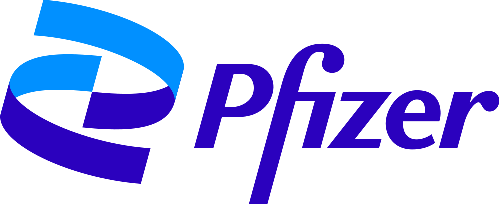

Draft
Opening a site or launching a product? Draft new SOPs from your own procedures and the rules that apply.
AuditThread drafts, checks and updates SOPs and other GxP documents, so you find the gaps before the auditor does. Your experts sign off every change.
Every change to a GMP system is approved by Quality Assurance before it is implemented. The change record holds the approval, the impact assessment and the plan for verifying the change.
A minor change may be implemented by the System Owner and approved by Quality Assurance within 30 days after it is implemented.
Founders' backgrounds

 CombinatorY Combinator
CombinatorY Combinator
FDA's most cited finding at drug plants, year after year: quality unit procedures not written down or not followed.
SOPs to rewrite when one site moves to a new system or adds a line.
to review and close out a validation test that took one week to run.
What we do
We start with SOPs, policies and work instructions. Validation protocols, change control and CAPA come next.
Opening a site or launching a product? Draft new SOPs from your own procedures and the rules that apply.
Check documents against FDA, EMA, MHRA and PIC/S rules, and against each other. Each finding shows the passage and the rule behind it.
When a regulation or a process changes, see every document it touches.
How it works
Choose the documents and the rules they have to meet.
See each finding next to the passage and the rule it relies on.
Accept, edit or reject each one. Nothing changes until a person approves it.
How we test it
It's the first question every QA head asks. We answer it with evals: repeatable tests that score our AI on SOPs where we already know the answers.
We hide known errors in real SOPs: wrong deadlines, out-of-date references, sections that contradict each other.
The AI reviews each SOP several times, so one lucky run doesn't count.
Every finding is marked caught, missed or made up, with a domain expert on the hard calls.
We change the AI's instructions and run the same test again. Every new version takes it before it ships.
Pilot
A pilot takes two to three weeks. We run it with you on AuditThread, on a process such as change control or deviations.
The SOPs and work instructions for that process, the rules they must meet, and time with your QA lead to check our findings.
Every finding with the passage and rule behind it, Word files with tracked changes, and a side-by-side with your own review.
If it works for you, we roll AuditThread out to your other processes.
CEO
14 years in pharma engineering, validation and GMP compliance. At Pfizer he developed KM Mobile, the company's global knowledge management system.
COO
Co-founded Coinrule, an automated trading platform backed by Y Combinator, and ran it as COO for eight years, growing it to 350,000+ users. Now builds AI agent systems. Previously in banking and risk at Citi. MPhil Degree from the University of Oxford.
CTO
Founded Web3 Labs and created Web3j, the open-source Ethereum library with over 4 million monthly downloads. Built regulatory and trading systems at ANZ, UBS and Deutsche Bank.
Tell us which documents you'd check first. We'll show you what AuditThread finds, and how we test it.
Choose a time